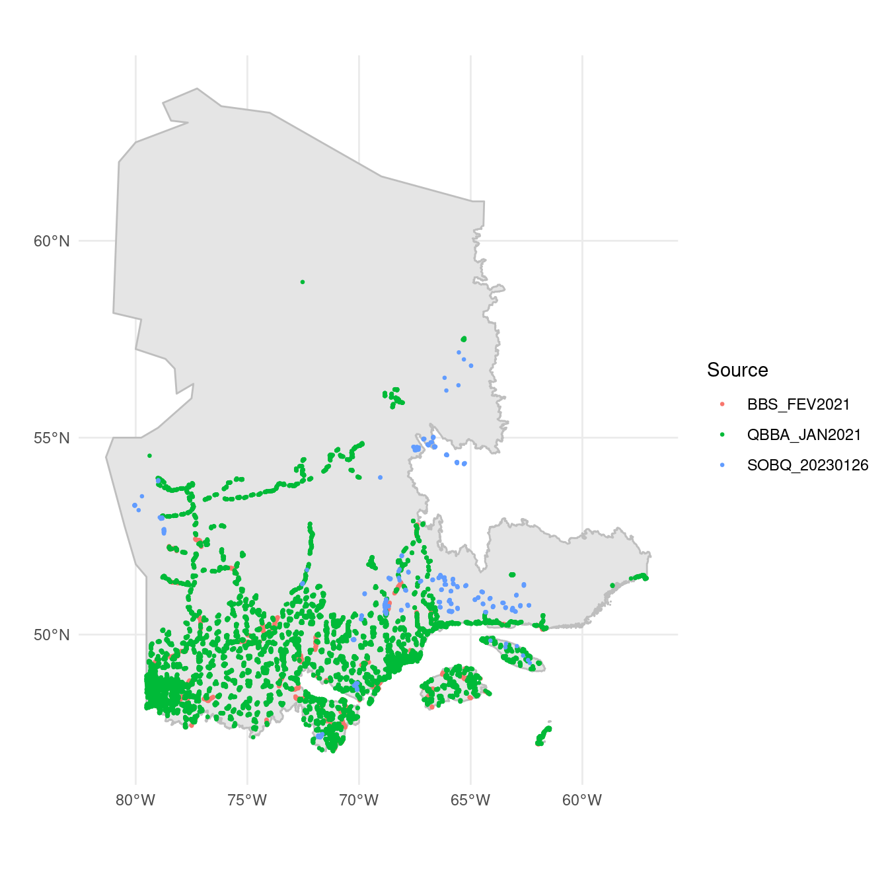
5 Legacy and iconic sites
In this section we discuss our approach to account for legacy and iconic sites in the sampling design. Legacy sites are historical or current surveys in which locations were randomly chosen, in contrast to iconic sites, which are obtained from non-random surveys. In this report, we will refer to both iconic and legacy sites as historical sites. These sites are particularly important in Quebec, where there are a large number of legacy and iconic sites (Figure 5.1). Given the high cost of sampling in remote regions and the limited resources available to sample, it is essential to take historical sites into account in order to make the most efficient use of limited resources to extend spatial coverage to under-sampled areas.
The latest method to integrate legacy and iconic sites is developed in Foster (2021). They use the position of each historical site to reduce the inclusion probability of neighboring sites following a kernel distribution, where the legacy effect decreases with distance from a historical site. However, their approach to incorporate legacy and iconic sites do not explicitly consider the amount of historical sites, nor the spatial randomness of their distribution. In fact, their approach naturally ensures randomnly selected sites, as they use only legacy sites while excluding iconic ones. They justify the exclusion of iconic sites, since these sites are usually special cases that may not represent the population and therefore generate a biased sample. Although we agree with the authors, we prioritised expanding the spatial coverage of samples by reducing the sample size of regions that have been well covered by historical sites.
In the following section we describe the historical sites for the study area. Then, we use two ecoregions as examples to discuss the decision to also consider sample size while accounting for historical sites. In the next chapter we describe our novel approach to account for the spatial randomness of historical sites to adjust the inclusion probability and the sample size. Finally, we briefly describe previous experimentations to incorporate historical sites.
Historical sites in the study area
TODO: describe the different sources
Why should we consider sample size?
Here, we discuss why changing inclusion probability alone is insufficient by comparing two ecoregions with oposite spatial distributions of historical sites. While the ecoregion 99 has evenly distributed historical sites over space, the ecoregion 217 present most of its historical sites around roads. We begin by outlining the method for reducing the inclusion probability of sites near legacy sites from Foster (2021), which we then apply to the two contrasting ecoregions.
Every PSU hexagon is assigned an inclusion probability as a function of habitat and access cost. The effect of a legacy site (\(l\)) on the inclusion probability of neighbouring hexagons (\(h\)) is derived from the Euclidean distance between \(h\) and \(l\) (\(d(h, l)\)), and the amplitude effect \(\sigma\) using a Gaussian function. Figure 5.2 shows the one-dimensional effect of increasing values of \(\sigma\) on the inclusion probability of neighbouring sites.
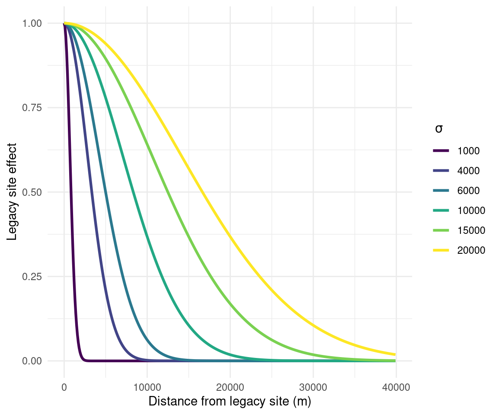
The method to reduce the inclusion probability of neighbouring sites near legacy sites developed in Foster (2021) is implemented in the R package MBHdesign. We redrew their illustration using a simulated grid landscape with three legacy sites to ilustrate the effect of increasing the \(\sigma\) parameter on the inclusion probability of adjacent sites (Figure 5.3).
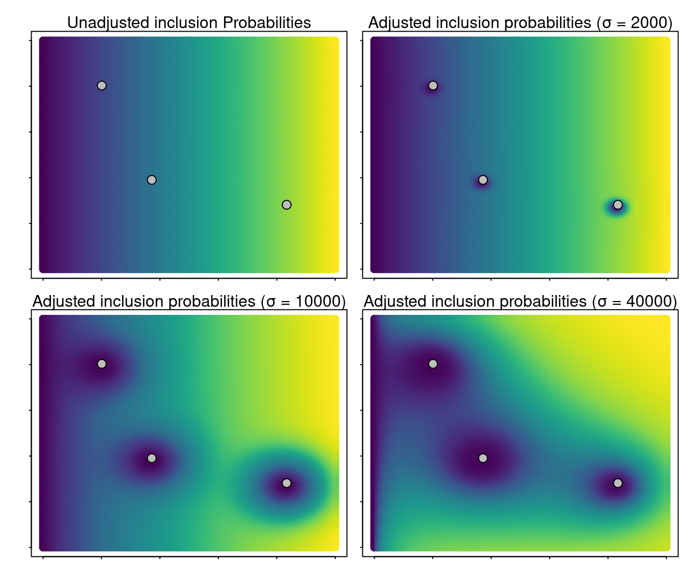
We applied the same approach for two ecoregion with contrasting spatial distribution of historical sites. By using the spatially balanced design to sample new sites while omitting historical sites, the selected hexagons are evenly distributed throughout the ecoregion, some of which overlap with the historical sites (Figure 5.4). Adjusting the probability of inclusion of hexagons, given their distance to historical locations, increases the spatial coverage of underrepresented areas (Figure 5.5).
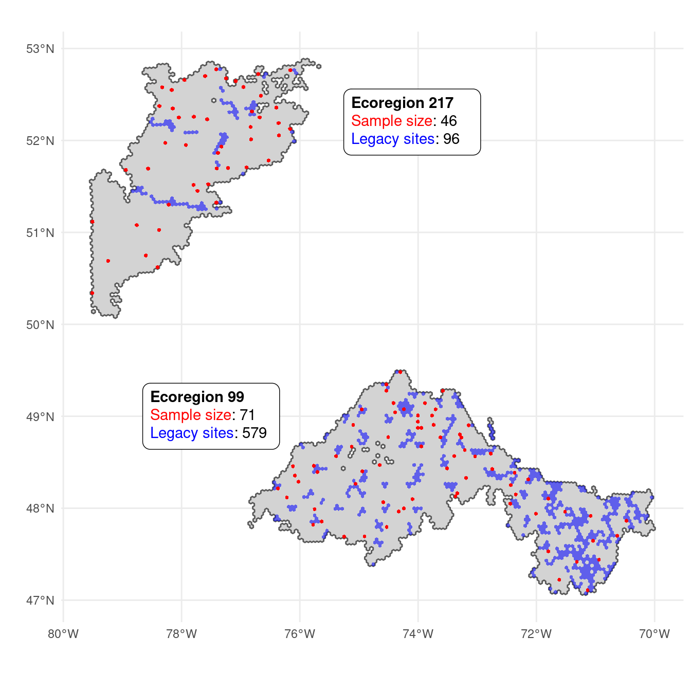
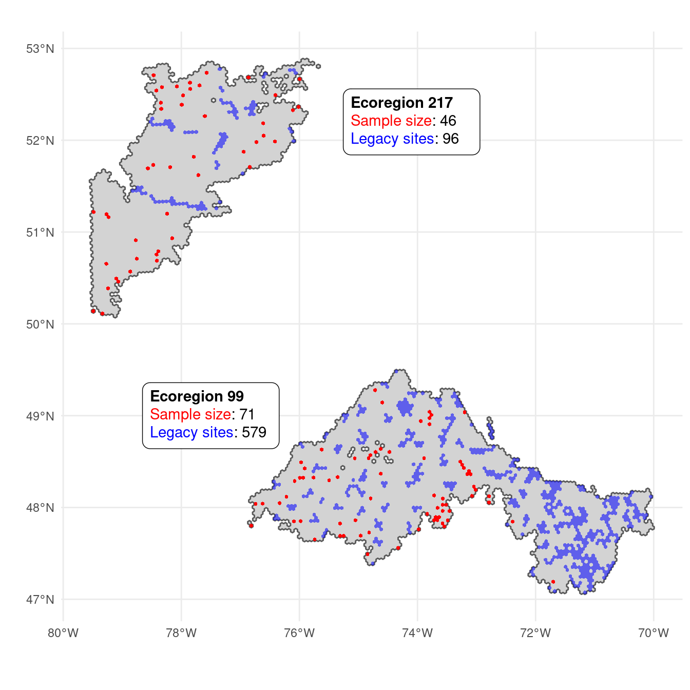
The issue is that when an ecoregion is well covered by historical sites, the sampled hexagons are driven to cluster in smaller available areas. When the inclusion probability was adjusted for ecoregion 99, almost a third of the sampled hexagons were clustered in a 20 km buffer. In the next section, we will build on this approach so the sample size may also be adjusted in response to historical sites.
A new approach to integrate legacy and iconic sites in spatially balanced designs
Current methods to include historical surveys are limited to randomly selected sites. While they adjust the inclusion probability to avoid sampling near historical sites, there is no consideration for sample size adjustment. Here we propose a novel approach where, in addition to modifying the inclusion probability, we also adjust the sample size according to the distribution of historical sites.
Theoretical description
We use a simulated grid with equal inclusion probabilities for all the 7661 hexagons to illustrate our approach. Given a 2% sample effort, the sample size for the model grid is 153 hexagons. We used two scenarios with contrasting spatial distributions of historical sites to show how their distribution affect sample size (Figure 5.6). The first scenario (red dots) describe evenly distributed historical sites, while the second (blue dots) describes historical sites grouped in two spatial clusters.
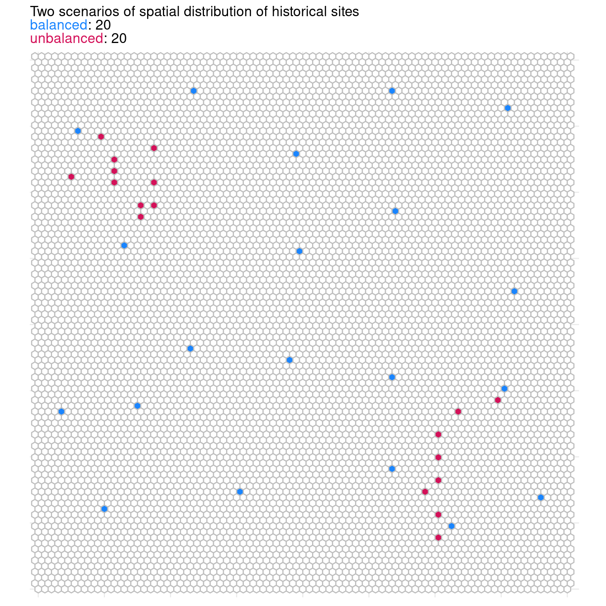
The main idea of adjusting the inclusion probability is that the population present in the region around historical sites are well represented by the existing sample. We build on this rationale to propose that the sample size of an ecoregion can be similarly adjusted given the spatial coverage of historical sites within the ecoregion. The total coverage of a historical site can be defined by a buffer of size \(s\). Then, the total area of the ecoregion is subtracted by the total area covered by historical sites to determine the final sample size for an ecoregion. By adding a buffer size to the historical locations in our grid example, the balanced scenario covered 14% of the total area, whereas the unbalanced scenario only covered 7.5% (Figure 5.7). Due to their clustered distribution, the unbalanced historical sites in this example are only 50% as effective at reducing the sample size as the balanced sites. This approach hopes to solve the two issues that emerged when only inclusion probability was adjusted. First, it offers the opportunity to use both legacy and iconic sites, regardless of the randomness of their distribution. Finally, it enables us to accommodate the number and distribution of historical sites in order to adjust the sample size and avoid clustered samples in ecoregions with adequate coverage.
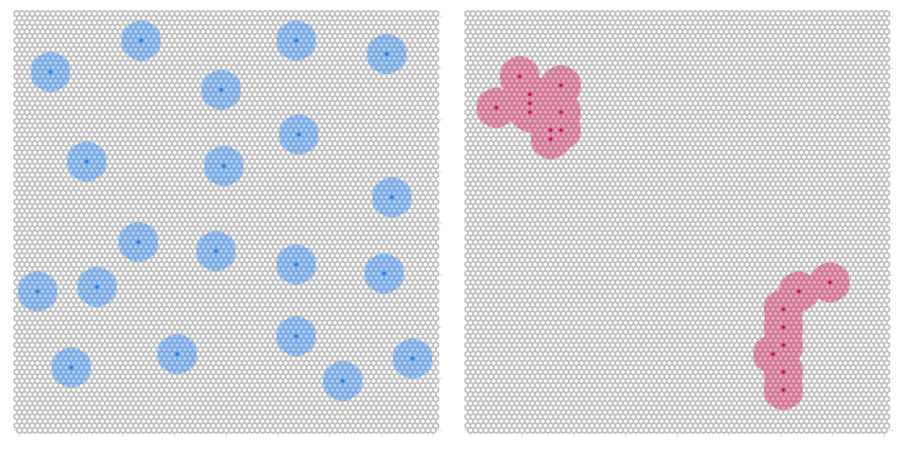
The unsolved issue is how to define the optimal value for the coverage of a historical site (\(s\)). In a perfect spatial balanced distribution of historical sites, the adjusted sample size of an ecoreregion should be reduced by the total number of historical sites. Take, for instance, an ecoregion with initial sample size of 80 hexagons. The presence of 10 spatially balanced historical sites should yields an adjusted sample size of 70 hexagons. Then, the optimal buffer size \(s\) must produce an adjusted sample size (\(N_{adj}\)) that equals the difference between the initial sample size (\(N_{base}\)) and the number of historical sites (\(N_{hist}\)), given the historical sites are spatially balanced across the ecoregion (Figure 5.8).
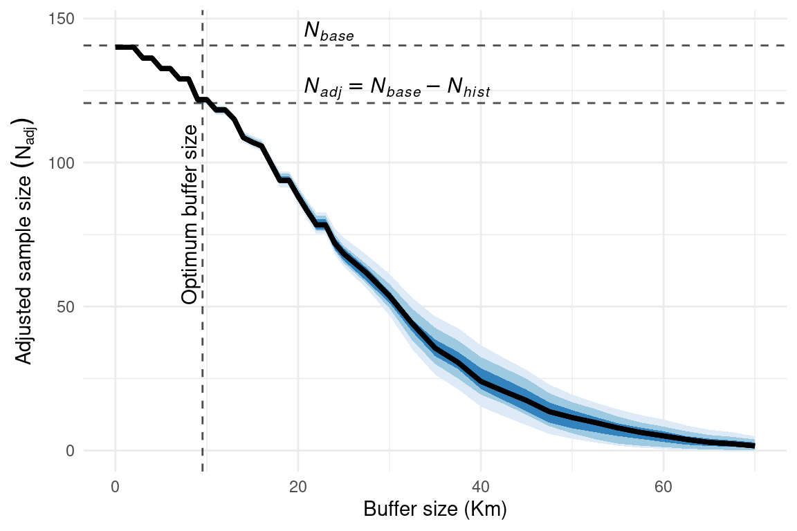
With this approach, we are able to determine the ideal buffer size that will allow us to reduce the sample size without compromising the spatial representation of the initial sampling effort. This simulation-based strategy, however, is sensible for the fixed number of historical sites determined a priori. In the example grid used in Figure 5.8, we simulated 20 historical sites, which represents a 0.2% of the total hexagons in the sample grid. We simulated different sets of historical sites ranging from 5 (0.07%) to 1400 (20%) to illustrate its impact on the effect of buffer size on the adjusted sample size (Figure 5.9).
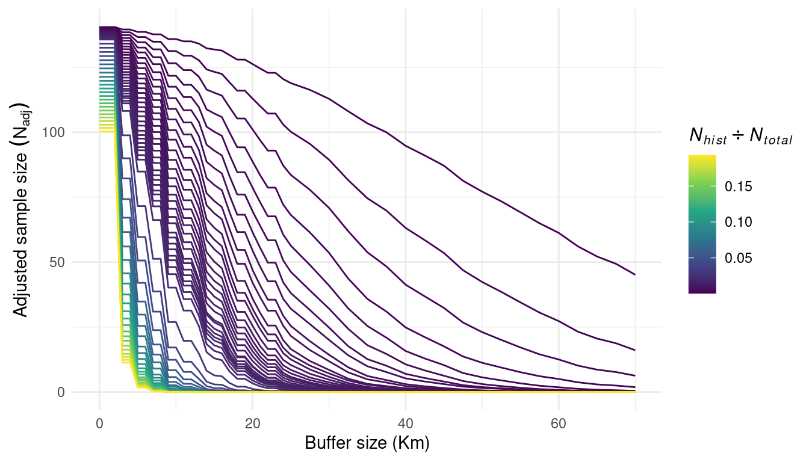
As expected, increasing the proportion of historical sites increases the rate of change (slope) of the buffer size effects on the adjusted sample size. Using the same simulations, we computed the optimal buffer size for each of the proportion of historical sites (\(\frac{N_{hist}}{N_{total}}\)) so the adjusted sample size (\(N_{adj}\)) equals the difference between the initial sample size (\(N_{base}\)) and the number of historical sites (\(N_{hist}\)) (Figure 5.10). Interestingly, increasing the proportion of historical sites increases the optimal buffer size up to a point until it reaches the sample effort (specified to 2% for the figure). The optimal buffer size reduces as the proportion of historical sites increases for proportions greater than the specified sampling effort.
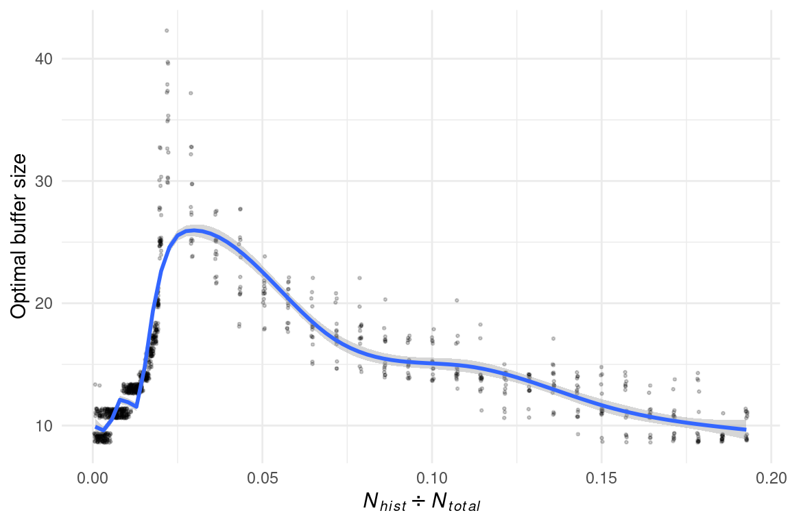
To illustrate the effect of different sampling efforts on the relationship between the proportion of historical sites and the optimal buffer size, we simulated sampling efforts ranging from 1 to 20%. (Figure 5.11).
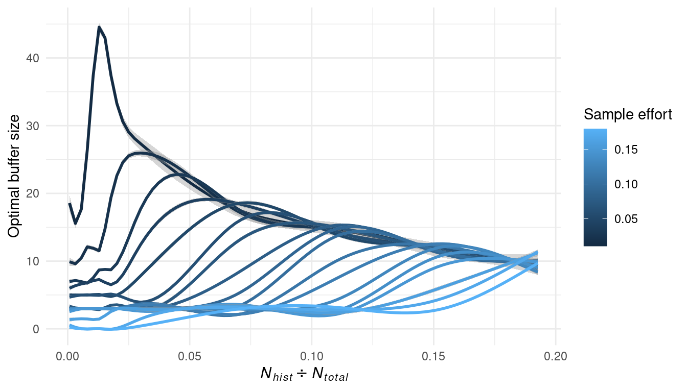
The fact that the optimal buffer size changes with the number of historical sites in a region may be related to buffer coverage overlapping between historical sites and the border effects where coverage does not have effect on sample size. As a result, the optimal buffer size may also depend on the size and shape of the sample grid.However, given that the shape and size of the ecoregions are not adjustable, we decided to not test for these variables.
Results
Following the theoretical development, we performed the identical simulations using actual ecoregion boundaries rather than simulated grids. We simulated spatially balanced historical sites across the ecoregions with relative proportions to the total number of hexagons ranging from 0.2 to 12%. For each value of proportion, we calculated the adjusted sample size for different buffer sizes with radius ranging from 4 to 40 km. Ecoregions 131, 28, 30, 46, 48, 49, and 216 were excluded due to the very small size that would result in zero generated historical size for most of the simulation sets.
The effect of buffer size and the proportion of historical sites on the adjusted sample size using the ecoregion boundaries were similar to those performed using a simulated grid (Figure 5.12). The effect of increasing the buffer size on the reduction of the adjusted sample size is non-linear, with the rate of change increasing as the number of historical sites rises.
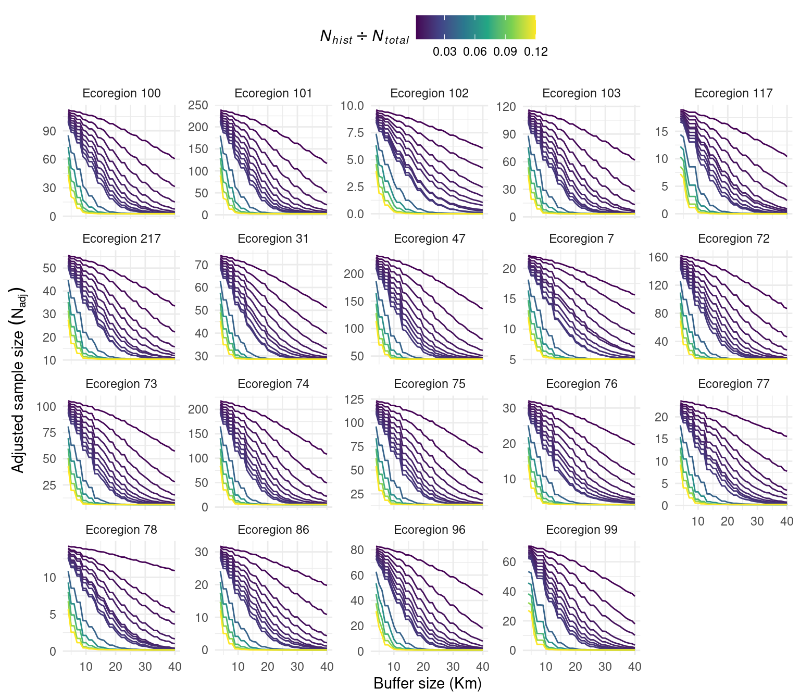
This non-linear relationship can be observed in the effect of the number of historical sites on the optimal buffer size when calculating the optimal buffer size. (Figure 5.13). The optimal buffer size increases with the number of historical sites up to a point where it decreases for most ecoregions as the proportion of historical sites increases. Only the ecoregion 131 show a slight decrease in optimal buffer size with the number of historical sites.
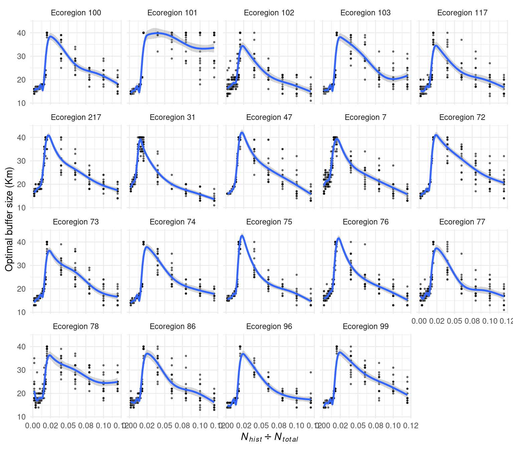
Across the simulations and replications, the distribution of optimal buffer size follows a bimodal distribution.(Figure 5.14).
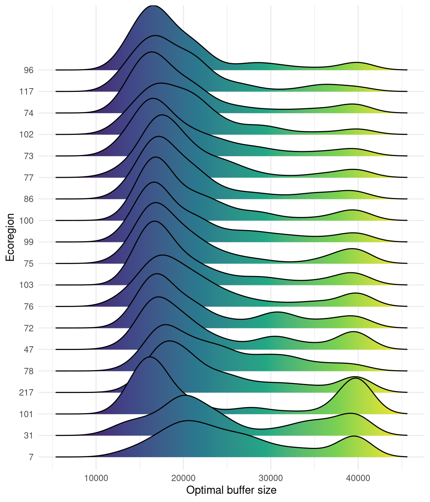
The case of ecoregions 99 and 217
We apply our approach to reduce the same size in function of the number and distribution of historical sites for two contrasting ecoregions. The ecoregions 99 and 217 have 579 (16.2%) and 97 (3.5%) hexagons classified as historical sites, respectively. While the number of historical sites outweighed the sampling effort (2%), the spatial distribution of these sites varied depending on the ecoregion. Spatial distribution of historical sites was balanced in ecoregion 99, but clustered in ecoregion 217. As a result, the adjusted sample size for these two ecoregions should also be different.
The optimal buffer size in fuction of the proportion of historical sites for the ecoregions 99 and 217 was 19.2 and 30.8 Km, respectively. The adjusted sample size taking into account the distribution and number of historical sites was reduced from 72 to 3 for ecoregion 99, and from 56 to 22 for ecoregion 217 (Figure 5.15).
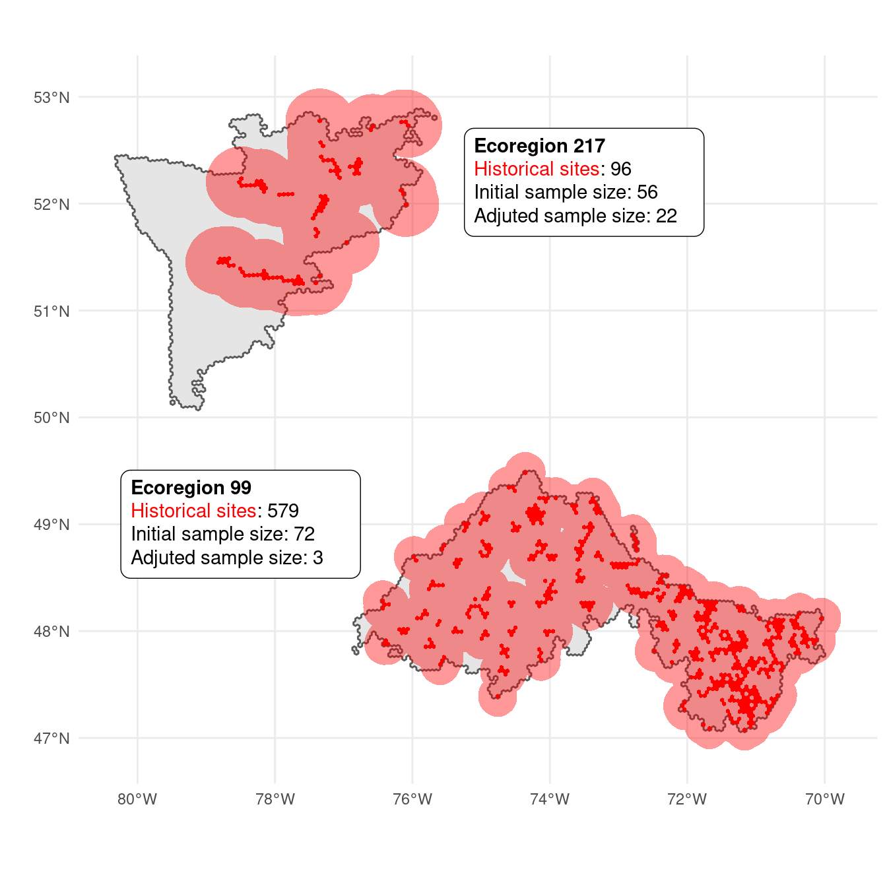
Limitations
In order to achieve an optimal design, additional simulations may be required to fine-tune the parameters. While we have accounted for spatial coverage in adjusting the sample size, this approach could be also extended to include habitat distribution in order to better account the effect of legacy sites in the sampling design.